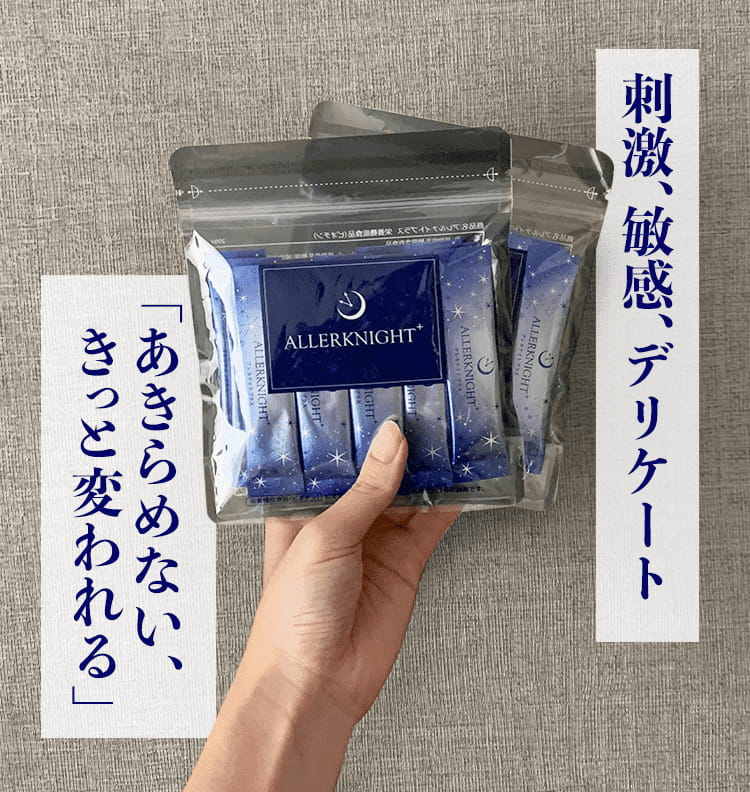

敏感・デリケートのお子様をもつ、そこのママさん！
今これを読んでいるということは、これまでいろんなのを試しては「またイマイチ・・・もうどうしたらいいの・・・」というスパイラル経験者では？
もしかすると、それは「外からのケア」ばかりに頼ってきたからかもしれません。そんな方には、今一度「中からのケア」の大切さに気づいてほしい！！（切実です、これ）
そして特に注目してほしいのは、敏感・デリケートを中から助ける「植物性の乳酸菌」が重要だよってこと。
『え～乳酸菌ならもうとっくに試したことあるよ！』という方も当然いると思いますが、、、乳酸菌は選び方がかなり重要なので、まずは読んでみてじっくり吟味していただければと思います。
実際に1年間試して、笑顔で過ごしている親子（お子さん：10代姉妹）にもインタビューしたので、こちらもぜひ読んでみてくださいネ。
敏感、デリケートな子どものために、日々いろんなケアをしてあげているママさんたち、本当にいつもお疲れ様です・・・！
でも、普段から家事に仕事に、育児…時間がない中、子どもの敏感な様子には頭を抱える方も多いはず。いいものを探してあげたいという気持ちにもなりますよね。
そんなママさんたちの頼れる味方というのが「K-2乳酸菌」
あのお菓子メーカーで有名な亀田製菓が研究の末発見した、優れた乳酸菌なんです。
臨床研究済み！日本農芸化学会などでの発表されている
日本人に相性のいい酒粕由来。
植物性の乳酸菌※なので、乳アレルギーの子でも安心。
※動物性乳酸菌は栄養豊富な場所でのみ成育できるのに対し、植物性乳酸菌は栄養状態が悪い場所でも生きていくことのできる強い乳酸菌。
今回インタビューしたのは、常世田（とこよだ）さんとその娘さん姉妹。「同じように困っている方にはすすめたいです、いいものがいろんな人に伝わるといいなと思って」と快く受けてくれました。
実際に2021年2月から飲んでくれてるのが、姉のれなちゃん（11歳）、妹のれみちゃん（8歳）。
「ふたりの変化に気づいたのは、母乳をやめて離乳食が始まったあたりです」いろんな食事やケアを試したけど、合うものには出合えなかったのだそう。
れなちゃんはお洋服にもこだわりが多くて。るみちゃんもこれは着たくないって、そんな姿に悩みが尽きなかったお母さま。
姉のれなちゃん（右）「前はテニスに集中しているときは気にならないけど、やり終わった後は集中が切れるから、すぐシャワーだった。」
そんな時に知ったのが「K-2乳酸菌」
飲むきっかけは、プロフィギュアスケーターの村上佳菜子ちゃんも「K-2乳酸菌」を飲んでいたからだという。
「テレビでみても、まさか小さい頃から同じ気持ちで過ごしてきたなんて思えない～！」それくらい試してみる価値があるのかもとお母さま。
アットコスメやいろんなところの口コミもしっかりチェックした上で、大丈夫だなと期待があったとのこと。
姉のれなちゃん（右）「温泉にも行ってみたい！」とこれからを楽しみにしているよう。
実際に飲んでみると飲みやすさにびっくり！！
「味も1回飲んでみたら美味しかったんだよね」いつも炭酸で割って飲んでいるとのこと。美味しく続けられるって大事！
「朝を気持ちよく迎えられるようになった！」と笑顔で話してくれた2人。
妹のるみちゃん「いつも夜寝る前に飲んでるの！」
1年間飲み続けた今、嬉しいことがあるようで、
「勉強や、習い事のテニスも集中して頑張ってるもんね？」というお母さまの問いかけにも「うん！」とはっきり返事。
さらに、姉のれなちゃんはテニスの試合で優勝！好きなことで結果が出ると、自信にも繋がるんですね。
お母さまも「ふたりの笑顔が見られて安心しています。女の子なんで、より繊細な年齢になる前に始めたのは、ホントに正解でした。」と安堵の表情。
（これからのおふたりの活躍、応援しています♡）
※個人の感想です。効果を保証するものではありません。
ここからは「K-2乳酸菌よいかもな」、「試してみようかな」という方のみにご案内しますね。
K-2乳酸菌を飲むためにおすすめしたいのは、健康食品会社オリエンタルバイオの「アレルナイトプラス」。

K-2乳酸菌がたっぷり入っているのに加えて、嬉しい成分も豊富なサプリメントなのです。
なにがいいかというと、
臨床研究と同量、2,000億個のK-2乳酸菌が入っていること！
1,800人以上の敏感・デリケートの声をもとに商品開発されている
他にも美容に嬉しいビオチンなどビタミンB群が全種類！
ラフマ葉やグリシン、ギャバなどの休息時におすすめの成分まで！
アレルギー特定原材料28品目を不使用※、着色料・防腐剤不使用で安心！
※えび、かに、小麦、そば、卵、乳、落花生（ピーナッツ） アーモンド、あわび、いか、いくら、オレンジ、カシューナッツ、キウイフルーツ、牛肉、くるみ、ごま、さけ、さば、大豆、鶏肉、バナナ、豚肉、まつたけ、もも、やまいも、りんご、ゼラチン
K-2乳酸菌がこんなに摂取できて、バランスよくサポートしてくれるサプリメントって、なかなかないはず。
サプリだと、子供には抵抗が・・・と思う方も安心してください。
アレルナイトプラスは顆粒タイプだから、そのままサラッと飲めちゃう。グレープフルーツ味なので味も美味しいんです！
とは言っても味が苦手だ！というお子様には、ヨーグルトやジュース、ゼリーに混ぜて工夫されているママも多いんだとか。
アレンジレシピも豊富だから飽きないっていいですよね。
※アレンジレシピは公式サイトでも紹介されています！ぜひチェック※
実は、プロフィギュアスケータ―の村上佳菜子さんも、幼少期から敏感、デリケートだったそう！テレビなどメディアでも笑顔で活躍されている様子からは、まったく想像つかないですよね。
そんな村上佳菜子さんも、アレルナイトプラスを毎日飲み続けているリアルなお客様。
「食品だから、長い目でみてほしい。私も4年以上続けてきて分かった事です！」
Instagramでは、キャミソールや水着を着こなしたりと、ファッションを楽しんでいる様子が分かります。アレルナイトプラスを続けている大先輩が見た目にも自信をもって活躍しているのには、期待が持てるはず！
詳しくは公式サイトで確認してみてくださいね。